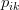

There is probably no need to say that there is too much information on the Web nowadays. Search engines help us a little bit. What is better is to have something interesting recommended to us automatically without asking. Indeed, from as simple as a list of the most popular bookmarks on Delicious, to some more personalized recommendations we received on Amazon, we are usually offered recommendations on the Web.
Recommendations can be generated by a wide range of algorithms. While user-based or item-based collaborative filtering methods are simple and intuitive, matrix factorization techniques are usually more effective because they allow us to discover the latent features underlying the interactions between users and items. Of course, matrix factorization is simply a mathematical tool for playing around with matrices, and is therefore applicable in many scenarios where one would like to find out something hidden under the data.
In this tutorial, we will go through the basic ideas and the mathematics of matrix factorization, and then we will present a simple implementation in Python. We will proceed with the assumption that we are dealing with user ratings (e.g. an integer score from the range of 1 to 5) of items in a recommendation system.
Basic Ideas
Just as its name suggests, matrix factorization is to, obviously, factorize a matrix, i.e. to find out two (or more) matrices such that when you multiply them you will get back the original matrix.
As I have mentioned above, from an application point of view, matrix factorization can be used to discover latent features underlying the interactions between two different kinds of entities. (Of course, you can consider more than two kinds of entities and you will be dealing with tensor factorization, which would be more complicated.) And one obvious application is to predict ratings in collaborative filtering.
In a recommendation system such as Netflix or MovieLens, there is a group of users and a set of items (movies for the above two systems). Given that each users have rated some items in the system, we would like to predict how the users would rate the items that they have not yet rated, such that we can make recommendations to the users. In this case, all the information we have about the existing ratings can be represented in a matrix. Assume now we have 5 users and 10 items, and ratings are integers ranging from 1 to 5, the matrix may look something like this (a hyphen means that the user has not yet rated the movie):
| D1 | D2 | D3 | D4 | |
| U1 | 5 | 3 | - | 1 |
| U2 | 4 | - | - | 1 |
| U3 | 1 | 1 | - | 5 |
| U4 | 1 | - | - | 4 |
| U5 | - | 1 | 5 | 4 |
Hence, the task of predicting the missing ratings can be considered as filling in the blanks (the hyphens in the matrix) such that the values would be consistent with the existing ratings in the matrix.
The intuition behind using matrix factorization to solve this problem is that there should be some latent features that determine how a user rates an item. For example, two users would give high ratings to a certain movie if they both like the actors/actresses of the movie, or if the movie is an action movie, which is a genre preferred by both users. Hence, if we can discover these latent features, we should be able to predict a rating with respect to a certain user and a certain item, because the features associated with the user should match with the features associated with the item.
In trying to discover the different features, we also make the assumption that the number of features would be smaller than the number of users and the number of items. It should not be difficult to understand this assumption because clearly it would not be reasonable to assume that each user is associated with a unique feature (although this is not impossible). And anyway if this is the case there would be no point in making recommendations, because each of these users would not be interested in the items rated by other users. Similarly, the same argument applies to the items.
The mathematics of matrix factorization
Having discussed the intuition behind matrix factorization, we can now go on to work on the mathematics. Firstly, we have a set of users, and a set of items. Let of size
be the matrix that contains all the ratings that the users have
assigned to the items. Also, we assume that we would like to discover
$K$ latent features. Our task, then, is to find two matrics matrices (a matrix) and (a matrix) such that their product approximates :
In this way, each row of would represent the strength of the associations between a user and the features. Similarly, each row of
would represent the strength of the associations between an item and
the features. To get the prediction of a rating of an item by , we can calculate the dot product of the two vectors corresponding to and :
Now, we have to find a way to obtain and . One way to approach this problem is the first intialize the two matrices with some values, calculate how `different’ their product is to , and then try to minimize this difference iteratively. Such a method is called gradient descent, aiming at finding a local minimum of the difference.
The difference here, usually called the error between the estimated rating and the real rating, can be calculated by the following equation for each user-item pair:
Here we consider the squared error because the estimated rating can be either higher or lower than the real rating.
To minimize the error, we have to know in which direction we have to modify the values of  and .
In other words, we need to know the gradient at the current values, and
therefore we differentiate the above equation with respect to these two
variables separately:
Having obtained the gradient, we can now formulate the update rules for both and :
Here, is a constant whose value determines the rate of approaching the minimum. Usually we will choose a small value for , say 0.0002. This is because if we make too large a step towards the minimum we may run into the risk of missing the minimum and end up oscillating around the minimum.
A question might have come to your mind by now: if we find two matrices and such that approximates , isn’t that our predictions of all the unseen ratings will all be zeros? In fact, we are not really trying to come up with and such that we can reproduce exactly. Instead, we will only try to minimise the errors of the observed user-item pairs. In other words, if we let be a set of tuples, each of which is in the form of , such that contains all the observed user-item pairs together with the associated ratings, we are only trying to minimise every for . (In other words, is our set of training data.) As for the rest of the unknowns, we will be able to determine their values once the associations between the users, items and features have been learnt.
Using the above update rules, we can then iteratively perform the
operation until the error converges to its minimum. We can check the
overall error as calculated using the following equation and determine
when we should stop the process.
Regularization
The above algorithm is a very basic algorithm for factorizing a
matrix. There are a lot of methods to make things look more complicated.
A common extension to this basic algorithm is to introduce
regularization to avoid overfitting. This is done by adding a parameter and modify the squared error as follows:
In other words, the new parameter is used to control the magnitudes of the user-feature and item-feature vectors such that and would give a good approximation of without having to contain large numbers. In practice,
is set to some values in the range of 0.02. The new update rules for
this squared error can be obtained by a procedure similar to the one
described above. The new update rules are as follows.
Implementation in Python
Once we have derived the update rules as described above, it actually becomes very straightforward to implement the algorithm. The following is a function that implements the algorithm in Python (note that this implementation requires the numpy module).
01 | import numpy |
02 |
03 | def matrix_factorization(R, P, Q, K, steps=5000, alpha=0.0002, beta=0.02): |
04 | Q = Q.T |
05 | for step in xrange(steps): |
06 | for i in xrange(len(R)): |
07 | for j in xrange(len(R[i])): |
08 | if R[i][j] > 0: |
09 | eij = R[i][j] - numpy.dot(P[i,:],Q[:,j]) |
10 | for k in xrange(K): |
11 | P[i][k] = P[i][k] + alpha * (2 * eij * Q[k][j] - beta * P[i][k]) |
12 | Q[k][j] = Q[k][j] + alpha * (2 * eij * P[i][k] - beta * Q[k][j]) |
13 | eR = numpy.dot(P,Q) |
14 | e = 0 |
15 | for i in xrange(len(R)): |
16 | for j in xrange(len(R[i])): |
17 | if R[i][j] > 0: |
18 | e = e + pow(R[i][j] - numpy.dot(P[i,:],Q[:,j]), 2) |
19 | for k in xrange(K): |
20 | e = e + (beta/2) * (pow(P[i][k],2) + pow(Q[k][j],2)) |
21 | if e < 0.001: |
22 | break |
23 | return P, Q.T |
We can try to apply it to our example mentioned above and see what we would get. Below is a code snippet in Python for running the example.
01 | R = [ |
02 | [5,3,0,1], |
03 | [4,0,0,1], |
04 | [1,1,0,5], |
05 | [1,0,0,4], |
06 | [0,1,5,4], |
07 | ] |
08 |
09 | R = numpy.array(R) |
10 |
11 | N = len(R) |
12 | M = len(R[0]) |
13 | K = 2 |
14 |
15 | P = numpy.random.rand(N,K) |
16 | Q = numpy.random.rand(M,K) |
17 |
18 | nP, nQ = matrix_factorization(R, P, Q, K) |
19 | nR = numpy.dot(nP, nQ.T) |
And the matrix obtained from the above process would look something like this:
| D1 | D2 | D3 | D4 | |
| U1 | 4.97 | 2.98 | 2.18 | 0.98 |
| U2 | 3.97 | 2.40 | 1.97 | 0.99 |
| U3 | 1.02 | 0.93 | 5.32 | 4.93 |
| U4 | 1.00 | 0.85 | 4.59 | 3.93 |
| U5 | 1.36 | 1.07 | 4.89 | 4.12 |
We can see that for existing ratings we have the approximations very close to the true values, and we also get some 'predictions' of the unknown values. In this simple example, we can easily see that U1 and U2 have similar taste and they both rated D1 and D2 high, while the rest of the users preferred D3, D4 and D5. When the number of features (K in the Python code) is 2, the algorithm is able to associate the users and items to two different features, and the predictions also follow these associations. For example, we can see that the predicted rating of U4 on D3 is 4.59, because U4 and U5 both rated D4 high.
Further Information
We have discussed the intuitive meaning of the technique of matrix factorization and its use in collaborative filtering. In fact, there are many different extensions to the above technique. An important extension is the requirement that all the elements of the factor matrices ( and in the above example) should be non-negative. In this case it is called non-negative matrix factorization (NMF). One advantage of NMF is that it results in intuitive meanings of the resultant matrices. Since no elements are negative, the process of multiplying the resultant matrices to get back the original matrix would not involve subtraction, and can be considered as a process of generating the original data by linear combinations of the latent features.
Source Code
The full Python source code of this tutorial is available for download at:
References
There have been quite a lot of references on matrix factorization. Below are some of the related papers.
- Gábor Takács et al (2008). Matrix factorization and neighbor based algorithms for the Netflix prize problem. In: Proceedings of the 2008 ACM Conference on Recommender Systems, Lausanne, Switzerland, October 23 - 25, 267-274.
- Patrick Ott (2008). Incremental Matrix Factorization for Collaborative Filtering. Science, Technology and Design 01/2008, Anhalt University of Applied Sciences.
- Daniel D. Lee and H. Sebastian Seung (2001). Algorithms for Non-negative Matrix Factorization. Advances in Neural Information Processing Systems 13: Proceedings of the 2000 Conference. MIT Press. pp. 556–562.
- Daniel D. Lee and H. Sebastian Seung (1999). Learning the parts of objects by non-negative matrix factorization. Nature, Vol. 401, No. 6755. (21 October 1999), pp. 788-791.